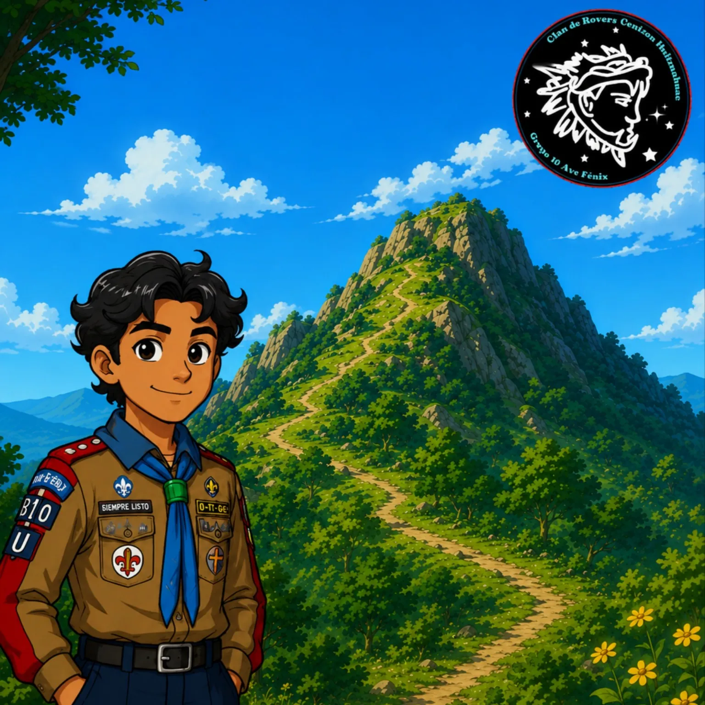

Explora los mejores lugares para camping, rutas de hiking y una biblioteca de recursos creada por y para la comunidad scout.
Cargando lugares…
No encontramos lugares con esa búsqueda. Prueba con otro nombre, municipio o actividad.
Guías descargables en PDF
Cocina sin utensilios
Protocolos de emergencia
Orientación, pionerismo y más
Dinámicas, grandes juegos y rallys
Tradiciones y espiritualidad
Ayúdanos a crecer nuestra base de datos. Mándanos la ubicación y detalles para agregarlos a la red.